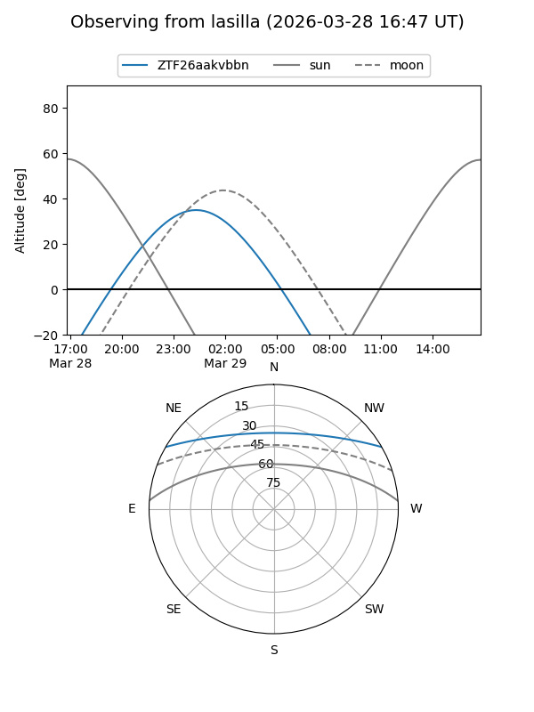
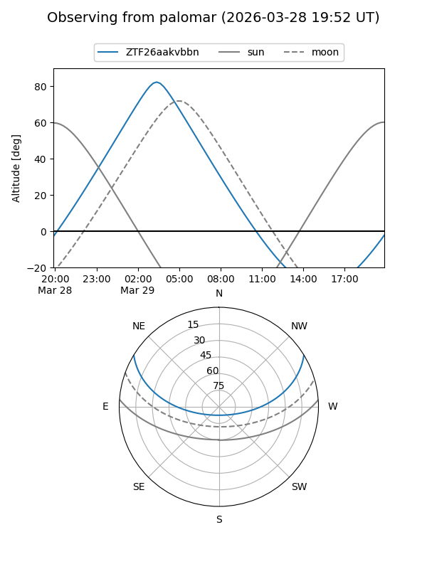

ZTF26aakvbbn
Target ZTF26aakvbbn at 2026-03-29 05:15
Aliases and brokers:
FINK: link
Lasair: link
ALeRCE: link
alt names
ZTF26aakvbbn (ztf,fink_ztf)
Coordinates:
equatorial (ra, dec) = 119.7316,+25.81710
equatorial (HMS+DMS) = 07:58:55.59,+25:49:01.54
galactic (l, b) = (195.6230,+25.53780)
Flags:
Photometry:
last ztfg=19.99
1 ztfg detections
Lightcurve
Visibility


Additional plots